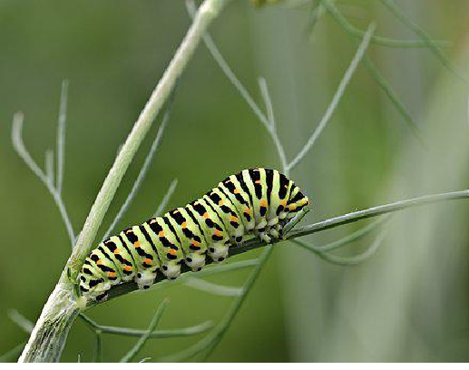
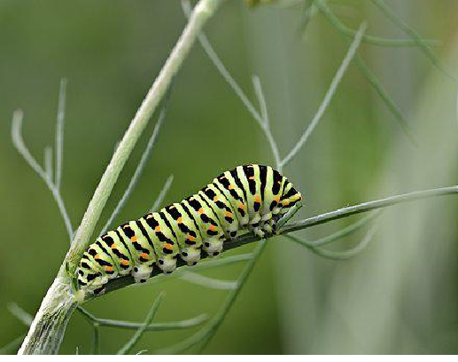
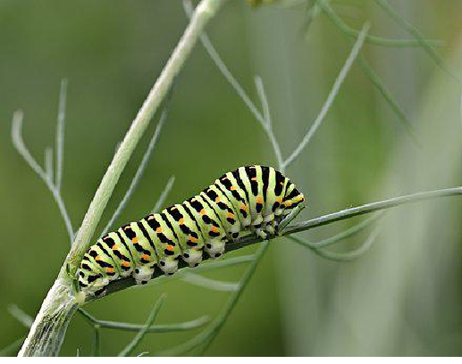

The row with insects name are breaking first because the text of insect width is high then intials row is breaking next

| Letter | Insects | City | River |
|---|---|---|---|
| T | Terminite | Tamilnadu | Thames River |
| I | Inchworm | Indiana | Ilinois river |
| R | Raupe | Rajasthan | Rabbit River |
| U | Underwing | Uttarkhand | Ugashik River |
| M | Mayflies | Maldives | Macatawa River |
| A | Antlion | Atlanta | Alfia |
Termites can reproduce extremely fast, this is the second reason why it’s so hard to get rid of termites for the average homeowner.Some queens can lay several thousand eggs per day, which means a colony is constantly growing.Mature termite nests can have hundreds of thousands or even millions of individuals!As the colony gets larger, it expands its territory. The most mature colonies will produce more than one queen to help with egg-laying duties. Sometimes, to expand territory, additional queens can even be sent far away from the original colony to start a satellite nest.You can see why termites are hard to eradicate from your house once you understand how their reproductive cycle enables them to grow exponentially.But we’ve got one more surprise for you. Here’s the third reason why it’s so hard to get rid of termites
Termities Indetail
Inchworms aren’t worms at all, but caterpillars who have legs at both ends of their bodies and none in the middle. This makes them look odd when they move, shifting first one end and then the other, which has the effect of making them arch their bodies as they go. Some people think that they look a lot like a measuring tape and that’s how they got the nickname inchworm. In fact, another name for these small caterpillars is measuring worms.
Inchworm Indetail
Die Raupe ist das hauptsächlich nahrungsaufnehmende Stadium des Schmetterlings. Schmetterlingsraupen sind überwiegend Pflanzenfresser, es gibt aber Formen, die sich von toter organischer Substanz ernähren, diese kann dann auch tierischen Ursprungs sein. Bei manchen ist dieses Stadium das einzige, in dem sie überhaupt Nahrung zu sich nehmen. Die Falter dieser Arten leben dann nur für die Fortpflanzung und sterben schon bald nach ihrem Schlupf. Dadurch, dass sich das Körpervolumen der Raupen stark vergrößert, müssen sie sich mehrmals häuten, bis sie ihre endgültige Größe erreicht haben. Sie bilden von Zeit zu Zeit eine neue größere Haut, die unter der alten wächst. Zur Häutung schwillt die Raupe an, bis die alte Haut platzt und durch Muskelbewegungen nach hinten weggeschoben werden kann.
Raupe Indetail